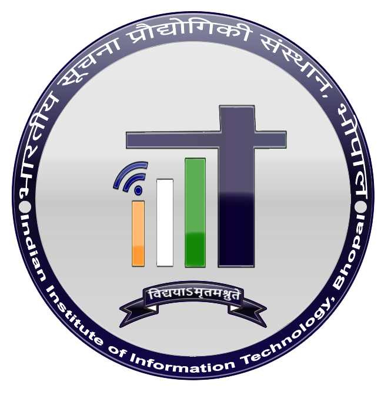
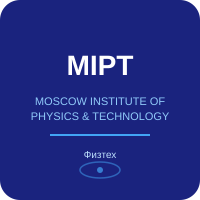
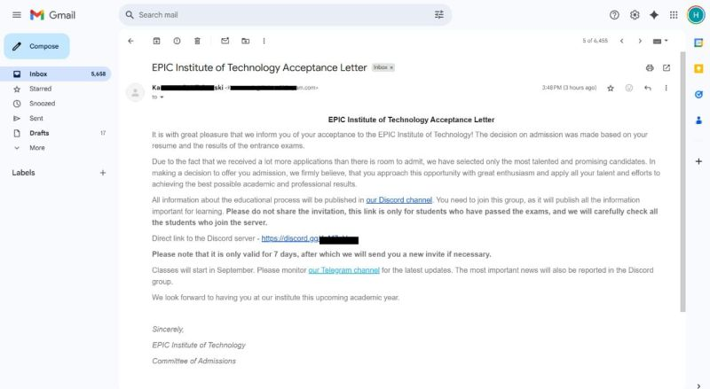

ACADEMIC JOURNEY
Education
Building a strong foundation, one step at a time.
"Same curiosity,
bigger horizons."
bigger horizons."
2023
– 2027 Undergraduate
– 2027 Undergraduate
Current

IIIT Bhopal — Indian Institute of Information Technology
B.Tech — Electronics & Communication Engineering
Pursuing a strong foundation in electronics, communication systems and their intersection with emerging technologies like AI and embedded systems.
2024
– Present Online Program
– Present Online Program
Minor
IIT Madras — Indian Institute of Technology
Minor in Data Science & Applications
Developing a strong foundation in data science, machine learning and real-world applications through a rigorous online program.
2025
– 2026 International
Program
– 2026 International
Program
Global

MIPT — Moscow Institute of Physics & Technology
Specialization in Data Science & Computer Vision
Advanced coursework and hands-on projects in machine learning, deep learning and hardware-aware system design.

❝
Education is not just about learning, but about expanding the horizon of what is possible.